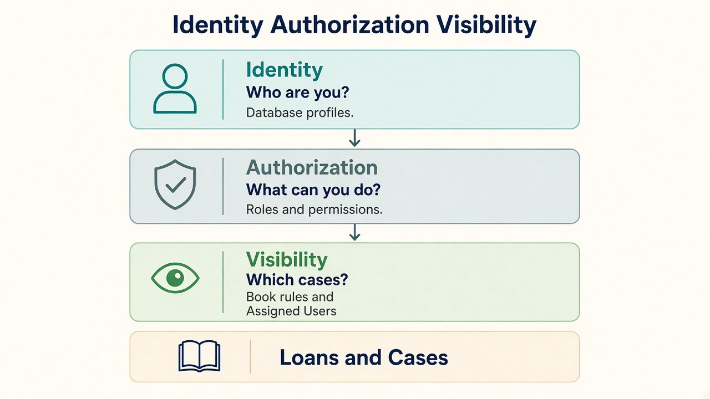
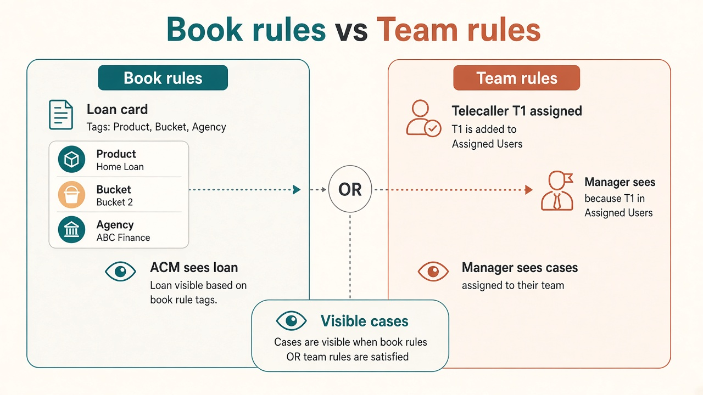
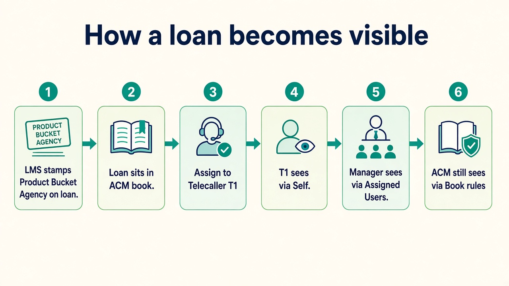

Identity, Authorization & Visibility for Godrej Hierarchy
A complete operating model to replace the temporary per-manager agency workaround,
configure who can see which cases, change how users are onboarded, account for Command Tower,
and roll out phase by phase across CRM Web, Manager App, and Field Agent App (iOS & Android).
Tenant: GodrejIdentity: Database profilesBranch: Optional / future-readyApps: Web · Manager · Field
1. Executive summary
Godrej needs a clear collection hierarchy (managers with telecallers and field agents,
across products and buckets). Today this is achieved with a temporary workaround:
create a separate agency for each manager. Because
Portfolio = Agency × Product × Bucket, portfolios multiply as
managers × product/bucket combinations, which creates heavy maintenance.
To solve this hierarchy issue specific to Godrej, Collekto will implement
three platform layers — Identity, Authorization, and Visibility — so access is configured
explicitly and the per-manager agency pattern is no longer required for access control.
Identity
Who are you?
Profiles and sessions in the database. One user id used by Web and mobile apps.
Authorization
What can you do?
Role → permissions (view case, assign, settle, open reports, admin modules).
Visibility
Which cases?
Rules on Assignee, Product, Bucket, Agency, and optional Branch / All Cases.
Skim these diagrams first. They summarise how hierarchy, books, teams, and allocation fit together.
0.1 Three layers

Identity proves who you are; Authorization what you may do; Visibility which loans appear.
0.2 Book rules vs team rules

Book = Product/Bucket/Agency on the loan. Team = Assigned Users / Self. Same user can have both (OR).
flowchart TB
Loan[Loan: Product Bucket Agency Assignee]
Book[Book rules match attributes]
Team[Team rules match assignee]
Out[Visible to user]
Loan --> Book --> Out
Loan --> Team --> Out
0.3 How a loan becomes visible

Assign the worker only. Managers/ACMs see via Visibility — not dual assignment on the loan.
sequenceDiagram
participant LMS
participant Loan
participant ACM
participant T1 as Telecaller
participant M1 as Manager
LMS->>Loan: Stamp Product Bucket Agency
Note over ACM: Sees via book rules
Loan->>Loan: Assign T1
Loan-->>T1: Self
Loan-->>M1: If T1 in Assigned Users
Loan-->>ACM: Still via book
0.4 Dropdowns: manager vs sub-tenant
flowchart LR
M[Manager] --> AU[Assigned Users]
AU --> D1[Only those TC/FA]
ST[ACM RCM ZCM NCM] --> CT[Command Tower subtree]
CT --> D2[Scoped managers TC FA]
ST --> DU[Direct Assigned Users]
DU --> D2
0.5 Today workaround vs target
flowchart TB
subgraph t [Today]
A[Agency per manager]
P[Managers times portfolios]
A --> P
end
subgraph n [Target]
V[Visibility rules]
B[Book plus Team]
V --> B
end
0.6 Runtime access
flowchart TD
S[Open loans] --> I{Identity?}
I -->|No| X[Deny]
I -->|Yes| P{Permission?}
P -->|No| X
P -->|Yes| V[Visibility predicate]
V --> Q[Query cases]
2. Problem statement
2.1 Intended Godrej hierarchy (business)
flowchart TB
TA[Tenant Admin]
CM[Collection managers / area books]
M[Manager]
TC[Telecaller]
FA[Field Agent]
Loans[Loans / Cases]
TA --> CM --> M
M --> TC
M --> FA
TC --> Loans
FA --> Loans
Business needs include: manager sees their team’s cases; telecaller/field agent see assigned cases;
admins see wider books; mixed product/bucket under one manager without inventing fake agencies.
2.2 Temporary workaround today
Temporary solution: a separate agency is created for each manager
so that manager’s telecallers and field agents (and portfolios) sit under that agency.
Mechanism
Effect
One agency per manager
Isolates each manager’s team
Portfolio = Agency × Product × Bucket
Same product/bucket repeated under every manager agency
Net result
Managers × portfolios to create and maintain
Command Tower / CM filters
Often used alongside this to filter books on web/reporting
2.3 What breaks or becomes hard
Onboarding a manager means agency + many portfolios + people membership
Moving a telecaller/field agent means portfolio/agency maintenance
Dashboards, loan lists, reports, and mobile apps all inherit the same structure
LMS loan ingest (replacing import) must not recreate the same agency explosion
No clean model for “this manager sees T1, T2, F1” without agency isolation
3. Solution architecture
Visibility is configured case scope, not “simulate hierarchy with agencies.”
Hierarchy-like outcomes (manager team, area book, admin all-cases) are expressed as rules.
flowchart TB
Apps["CRM Web · Manager App · Field App"]
Id["IDENTITY DB profiles & sessions"]
Auth["AUTHORIZATION Role → Permissions"]
Vis["VISIBILITY Rules: Assignee · Product · Bucket · Agency · Branch? · All Cases"]
Data["Loans / Cases / Settlements / Visits"]
Apps --> Id --> Auth --> Vis --> Data
3.1 Visibility rule semantics
Pattern
Meaning
Example
Same column, multiple values
OR
Bucket B1 | B2
Different columns, one row
AND
Product PL AND Agency Inhouse
Multiple rows, same user
OR
Team assignees OR product book
3.2 Dimensions for Godrej
Dimension
Godrej now
Notes
Assignee
Primary
Self for TC/FA; lists for managers
Product
Primary
From loan / LMS attributes
Bucket
Primary
From loan / LMS attributes
Agency
Supported
Prefer shared/inhouse agency — not one agency per manager
Branch
Optional
Not used by Godrej today; column present, non-mandatory
All Cases
Admin
Explicit tenant-wide for primary Tenant Admin
3.3 What this deliberately separates
Visibility (this solution)
Which loans appear on lists, dashboards, reports, mobile home screens.
Assignment (related, separate)
Who is allocated to work a loan (TC/FA). After assign, SELF visibility applies.
Assign updates assignee; visibility SELF for worker; manager sees via Assigned Users
Settlement list / approve
Often portfolio-linked
Scope via loan visibility + permission to settle/approve
Field Agent app
Requires portfolioId as access key
SELF visibility; portfolio picker demoted
Manager app
Team loans via manager agency portfolios
Assigned Users / dimension rules
LMS loan ingest
Risk of recreating agency×portfolio explosion
Stamp Product/Bucket/Agency on loan; do not create per-manager agency
SMS / Payment callbacks
May assume portfolio/agency context
Operate on loan id; hierarchy not required for callback
Command Tower books
Mixed as security + org map
CT remains org/reference; security = Visibility (seeded from CT where useful)
5. How user onboarding changes
5.1 Today (temporary model)
1
Create agency for the manager
2
Create portfolios for each Product × Bucket under that agency
3
Create manager / TC / FA profiles under that agency
4
Attach people to portfolios so they can see loans
5.2 Target onboarding (Visibility model)
1
Identity: Create user in database with role (Tenant Admin / Manager / Telecaller / Field Agent / …)
2
Authorization: Role grants permissions (what screens/actions)
3
Visibility: Add rule rows for that user (Self / Assigned Users / Product+Bucket / Agency / All Cases)
4
Publish: Validate and activate visibility version — user can now see the correct cases
5.3 Role-wise onboarding checklist
Role
Create profile
Visibility seed
No longer required
Primary Tenant Admin
Yes
All Cases = Yes
—
Manager
Yes (shared/inhouse agency ok)
Assigned Users = their TC/FA; optional Product+Bucket rows
Retire dedicated agency + portfolio fan-out
Telecaller
Yes
Self Assigned = Yes; ensure manager’s Assigned Users includes them
Membership on many portfolios for access
Field Agent
Yes
Self Assigned = Yes; ensure manager’s Assigned Users includes them
Portfolio picker as security
Area / book admin (NCM/ZCM/RCM/ACM style)
Yes + permissions
Product/Bucket/Agency (and later Branch) rows for their book
Assuming title alone grants loan filter
Default automation (recommended): on create of Telecaller / Field Agent,
system auto-adds Self Assigned = Yes into a draft visibility set (still published with audit).
Manager team links are maintained via Assigned Users on the manager’s rules.
5A. Who appears in dropdowns — Managers vs Sub-tenant roles
There are two related but different questions:
Case visibility
Which loans/cases appear on lists, dashboards, and reports.
People visibility (dropdowns)
Which managers / telecallers / field agents appear when a user opens a filter or assignment dropdown.
Both are driven by configuration — not by creating a separate agency per manager.
Case visibility uses Visibility rules. People dropdowns use the team roster derived from
those rules and, for sub-tenant roles, from Command Tower books.
5A.1 Manager — only assigned telecallers & field agents
Rule: A manager’s TC/FA dropdowns show only the users listed in that manager’s
Visibility Assigned Users configuration — not every telecaller/field agent in the tenant.
How it is configured
User ID
Assigned Users
Self
Meaning
M1
T1 | T2 | F1 | F2
M1’s team roster = T1, T2, F1, F2
T1
Y
T1 sees only self-assigned cases
F1
Y
F1 sees only self-assigned cases
What the manager sees where
Surface
Behaviour
Telecaller dropdown (filters / assign / reports)
Only T1, T2 (from M1 Assigned Users who are telecallers)
Field Agent dropdown
Only F1, F2
Loan list / Manager App team loans
Cases where assignee ∈ {T1, T2, F1, F2} and/or Product+Bucket rules on M1
Another manager M2
Does not see T1/T2/F1/F2 unless those ids are also on M2’s Assigned Users
flowchart LR
Config["Visibility: M1 Assigned Users = T1 T2 F1 F2"]
Roster["Manager roster API"]
DD["TC / FA dropdowns"]
Cases["Case list predicate assignee in roster"]
Config --> Roster --> DD
Config --> Cases
How the roster is loaded at runtime
1
Manager logs in → Identity resolves profile M1.
2
System loads M1’s active Visibility rules and reads Assigned Users.
3
Roster API returns only those profile ids, split by role (Telecaller vs Field Agent).
4
UI dropdowns bind to that roster. No portfolio membership and no “all users in my agency” query.
Adding or removing someone from a manager’s team
Add: put the TC/FA id into M1’s Assigned Users → publish Visibility → dropdown and case scope update together.
Remove: delete id from Assigned Users → publish → they disappear from M1’s dropdowns and from M1’s assignee-based case scope.
TC/FA keep Self visibility for their own cases regardless of which manager lists them.
Multi-manager teams: If both M1 and M2 must supervise the same people, list the same TC/FA ids
on both managers’ Assigned Users rows. That replaces sharing one agency.
Direct report to ACM / RCM (no manager in between)
Yes — this is supported. Assigned Users is not limited to the Manager role.
A telecaller or field agent can report directly to an ACM or RCM (or ZCM/NCM) without a manager profile.
Need
How it is configured
ACM/RCM sees those people’s cases
On ACM/RCM Visibility: Assigned Users = T1 | F1 | … (same column as for managers)
ACM/RCM sees those people in dropdowns
People resolver includes profiles listed on that CM’s Assigned Users and/or mapped under their Command Tower book without requiring a manager node
TC/FA own app / lists
Still Self Assigned = Y — unchanged
Optional book overlap
ACM can also keep Product/Bucket/Agency rules from CT; Assigned Users covers the direct-report people path
flowchart TB
ACM[ACM or RCM]
T[Telecaller T1]
F[Field Agent F1]
Rules["Visibility on ACM: Assigned Users = T1 F1"]
Cases[Cases assigned to T1 or F1]
ACM --> Rules --> Cases
T --> Cases
F --> Cases
Solved: no need to invent a dummy manager or a per-manager agency just to hang TC/FA under ACM/RCM.
Mixed teams: same ACM can have some people via managers (CT book → manager → Assigned Users) and some via direct Assigned Users on the ACM.
Command Tower: may still map ACM → Agency → Product/Bucket for the book; people without a manager are attached via Visibility Assigned Users on the ACM/RCM, not forced through a manager row in CT.
Sub-tenant users are Tenant Admin–class profiles with a book of business
(often aligned to NCM → ZCM → RCM → ACM). They need dropdowns for
child CMs, managers, telecallers, and field agents that sit under their book —
not the entire tenant directory.
What Command Tower contributes
Command Tower stores the org map, for example:
NCM → ZCM → RCM → ACM → Agency → Product → Bucket
For a logged-in sub-tenant user, Command Tower answers:
“Which agencies / products / buckets (and child CM ids) sit under my node?”
How dropdown population works by sub-role
Logged-in sub-role
Command Tower scope
Dropdowns they see
NCM
All ZCMs (and below) under this NCM in CT
ZCM list from CT;
RCM / ACM cascaded from selected ZCM;
Managers / TC / FA = profiles whose work sits in agencies (or books) under that CT subtree
ZCM
RCMs under this ZCM
RCM → ACM cascade; Managers / TC / FA under that subtree only
RCM
ACMs under this RCM
ACM list; Managers / TC / FA under those ACMs’ agencies/books
ACM
Agencies (and product/bucket) under this ACM
Managers / TC / FA linked to those agencies or to managers in that book — not tenant-wide
Primary Tenant Admin (no sub-role)
Full CT optional for filters
Can load full NCM→… cascade and wider people search (still subject to All Cases for loans)
flowchart TB
ST[Sub-tenant user e.g. ZCM]
CT[Command Tower map]
Scope[Resolve subtree: RCM ACM Agency Product Bucket]
People[People resolver]
DD[Dropdown options: child CMs Managers TC FA]
Cases[Case Visibility rules for this user]
ST --> CT --> Scope
Scope --> People --> DD
ST --> Cases
Two-step resolve (important)
1
Book from Command Tower: from the logged-in CM id, read CT to get
child CM ids + Agency (+ Product/Bucket) set for that subtree.
2
People from profiles: return Managers / Telecallers / Field Agents in that book —
(a) managers under the CT agencies, (b) TC/FA on those managers’ Assigned Users, and
(c) TC/FA listed directly on the logged-in CM’s Assigned Users (no manager required).
3
Cases from Visibility: loan lists for the sub-tenant still use their
published Visibility rules (often Agency/Product/Bucket seeded from the same CT book).
Selecting a person in a dropdown only narrows further; it cannot expand beyond Visibility.
Only those RCMs/ACMs; managers M1,M2 in that book; TC/FA on M1/M2 teams
Visibility rules for ZCM-West (seeded from same agencies/products/buckets)
ACM-A
Agency set under ACM-A only
Managers/TC/FA in ACM-A book only — not RCM-South’s people
Narrower Visibility book
Cascade behaviour in UI (multi-select)
NCM selects one or more ZCMs → RCM options reload from CT under those ZCMs
RCM selection → ACM options reload
ACM / agency selection → Manager and TC/FA dropdowns reload from the people resolver
All cascades are scoped to the logged-in sub-tenant’s CT subtree (they never see another NCM’s tree)
5A.3 Summary matrix
Viewer
TC/FA in dropdown
Managers in dropdown
Child CMs in dropdown
Source of truth
Manager
Only Assigned Users
Usually N/A or limited
N/A
Visibility Assigned Users
ACM / RCM / ZCM / NCM
TC/FA under their CT book
Managers under their CT book
Child CMs from CT cascade
Command Tower subtree + people resolver
Primary Tenant Admin
Configurable / wider
Wider
Full CT cascade optional
Admin scope + CT for filters
Security reminder: Dropdown membership controls who you can pick.
Loan rows are still enforced by Visibility. A crafted API call cannot fetch cases outside Visibility
even if someone guesses another user’s id.
6. How hierarchy / visibility data is input
Business users do not maintain policy engines. They maintain a workbook (and/or admin UI that produces the same model).
6.1 Visibility workbook (primary input)
User ID
Branch
Product
Bucket
Agency
Assigned Users
Self
All Cases
ADMIN1
optional
Y
M1
T1|T2|F1|F2
M1
PL
B1|B2
INHOUSE
T1
Y
F1
Y
ACM1
AG_A|AG_B
For Godrej today, leave Branch blank. Column remains so Branch can be enabled later without redesign.
6.2 Ingest pipeline
flowchart LR
X[Excel / Admin UI] --> U[Upload]
U --> P[Parse]
P --> V[Validate vs DB]
V --> PR[Preview]
PR --> Pub[Publish]
Pub --> DB[(Active version)]
DB --> Cache[Invalidate cache]
Cache --> Runtime[Web + 4 apps]
Validate: user exists, product/bucket/agency exist, assigned users exist
Branch: if blank → ignored; if filled → must exist when Branch master is enabled
Nothing goes live until full-file validation succeeds
Each publish creates a version (ACTIVE / PREVIOUS) for audit and rollback
6.3 Other inputs that feed hierarchy behaviour
Input
Source
Used for
User profile + role
CRM registration (DB)
Identity + Authorization
Visibility rules
Excel / Visibility Admin
Case scope
Loan attributes
LMS sync / allocation
Match Product/Bucket/Agency/(Branch)/Assignee
Command Tower map
Existing CT / SEAM uploads
Org reference + optional seed of visibility books
Assignment actions
Allocator / manager in CRM or app
Updates assignee → SELF visibility
7. How Command Tower is taken into account
Position: Command Tower remains Godrej’s organisational / mapping artefact
(NCM → ZCM → RCM → ACM → Agency → Product → Bucket). It is not the runtime security engine.
Visibility rules are the runtime security engine.
7.1 Roles of the two systems
Command Tower
Org / book-of-business map
Useful for reporting drill-downs and ops reference
Can inform what Product/Bucket/Agency belong to a CM book
May continue to be uploaded/maintained as today for reporting
Visibility Service
Authoritative for “which cases can this user access?”
Seed: Generate Visibility workbook rows for CM/manager users from CT (Agency / Product / Bucket sets).
3
Team rules: Add Manager Assigned Users from current manager↔TC/FA relationships (not from CT alone).
4
Cut over: Loan/dashboard/report APIs enforce Visibility. CT filters on UI become optional convenience only.
5
Steady state: Day-2 access changes go through Visibility publish. CT updates for org analytics can continue in parallel without granting access by themselves.
7.3 Command Tower and people dropdowns (sub-tenant)
For sub-tenant roles, Command Tower is the directory scope for cascading filters
and for deciding which managers / telecallers / field agents appear in dropdowns
(see §5A). Visibility remains the case scope.
Need
Use Command Tower?
Use Visibility?
Which ZCM/RCM/ACM options to show
Yes — cascade from logged-in CM
No
Which agencies/products/buckets are in my book
Yes — map
Also seeded into Visibility for case queries
Which TC/FA appear for a manager
No
Yes — Assigned Users
Which TC/FA/managers appear for a ZCM/ACM
Yes — subtree → people resolver
Cases still Visibility
Which loans appear
Not as ACL
Yes — authoritative
7.4 What we will not do
Will not make Command Tower the sole ACL for case lists
Will not require CT sync on every page load for security of loan rows
Will not block hierarchy go-live on rebuilding CT as a full hierarchy engine
Will not show tenant-wide TC/FA lists to managers or to sub-tenants outside their CT book
If Godrej later wants automatic sync “CT change → Visibility draft,” that can be a later phase
(integration), after the Visibility engine is live.
8. Branch dimension — non-mandatory for Godrej now
Godrej does not operate a branching model in Collekto today.
The Visibility model still includes Branch as a first-class dimension in the
workbook and data model so it can be enabled later without redesign.
Aspect
Now (Godrej)
Future (if Branch adopted)
Workbook column
Present, left blank
Filled with branch codes
Validation
Blank allowed
Value must exist in branch master
Loan attribute
Not required
LMS/sync stamps branch_id
UI filters
Hidden or disabled
Multi-select Branch filter
Visibility rules
Ignore empty Branch
AND with other dimensions as configured
Design principle: Branch is optional infrastructure, not a Godrej go-live dependency.
9. How the whole solution works for Godrej
9.1 Target operating picture
flowchart TB
subgraph identity [Identity DB]
Users[Profiles: Admin Manager TC FA]
end
subgraph vis [Visibility]
Rules[Published rules version N]
end
subgraph loans [Loans]
LMS[LMS sync stamps Product Bucket Agency Assignee]
Attr[Loan attributes]
end
subgraph apps [Apps]
Web[CRM Web]
MA[Manager App]
FA[Field App]
end
Users --> Rules
LMS --> Attr
Rules --> Web
Rules --> MA
Rules --> FA
Attr --> Web
Attr --> MA
Attr --> FA
9.2 Day in the life
User
Opens
System behaviour
Field Agent
Pending / PTP / visits
Auth ok → Visibility SELF → only assigned loans
Telecaller
All Cases / dialer lists
Visibility SELF → assigned loans
Manager
Team loans / Manager App
Visibility Assigned Users (± Product/Bucket) → team book
Tenant Admin
Dashboards / reports
All Cases → full tenant (explicit)
Any user
Applies multi-select filters
Filters ∩ Visibility — never expands scope
9.3 What Godrej stops doing
Creating a new agency for every new manager (for access)
Creating Product×Bucket portfolios under each manager agency only to grant access
Treating portfolio membership as the ACL for people
9.4 What Godrej continues doing
Maintaining product/bucket masters
Using LMS as loan source (replacing import)
Assigning collectors/field agents to loans
Optionally keeping Command Tower for org/reporting maps
Publishing Visibility workbooks when teams or books change
sequenceDiagram
participant U as User
participant App as Web or Mobile
participant API as Backend
participant ID as Identity DB
participant AZ as Authorization
participant V as Visibility
participant DB as Cases DB
U->>App: Open loans / dashboard
App->>API: Request + session
API->>ID: Authenticate
ID-->>API: userId tenantId role
API->>AZ: Permission check
AZ-->>API: Allowed
API->>V: Resolve active rules
V-->>API: Predicate
API->>DB: Query tenant AND predicate AND UI filters
DB-->>API: Rows
API-->>App: Results
10.2 Publish visibility configuration
flowchart TB
Ops[Ops / Tenant Admin] --> Edit[Edit Excel or Admin UI]
Edit --> Upload[Upload]
Upload --> Val{Validate all rows}
Val -->|Fail| Err[Row errors returned]
Val -->|Pass| Prev[Preview impact]
Prev --> Pub[Publish version N]
Pub --> Act[ACTIVE in DB]
Act --> Inv[Cache invalidation]
Inv --> Live[All apps use version N]
10.3 Manager team change
1
Move telecaller T1 from manager M1 to M2 in ops process
2
Update Visibility: remove T1 from M1 Assigned Users; add T1 to M2
No agency/portfolio recreation required for access
10.4 LMS loan arrives (replaces import)
1
LMS upserts loan by external id
2
Stamp Product, Bucket, Agency (Branch only if present later)
3
Assignee empty or set per LMS/allocation policy
4
Visible automatically to users whose rules match attributes / assignees
5
Do not create per-manager agency as part of ingest
10.5 Assignment then collection
flowchart LR
L[Loan in book] --> A[Assign to FA or TC]
A --> S[Assignee stamped]
S --> FA[FA/TC sees via SELF]
S --> M[Manager sees via Assigned Users]
FA --> W[Disposition / visit / payment / settlement]
10.6 Manager opens TC / FA dropdown
sequenceDiagram
participant M as Manager M1
participant UI as CRM or Manager App
participant API as Roster API
participant V as Visibility
M->>UI: Open assign / filter dropdown
UI->>API: Get team for M1
API->>V: Read Assigned Users for M1
V-->>API: T1 T2 F1 F2
API-->>UI: TC list + FA list
UI-->>M: Only those people selectable
10.7 Sub-tenant opens people / CM dropdowns
sequenceDiagram
participant ST as Sub-tenant e.g. ZCM
participant UI as CRM filters
participant CT as Command Tower
participant PR as People resolver
ST->>UI: Open hierarchy / people filters
UI->>CT: Subtree for logged-in ZCM
CT-->>UI: Child RCM ACM Agency Product Bucket
UI->>PR: Managers TC FA in that book
PR-->>UI: Scoped people lists
Note over UI: Loan query still uses Visibility rules for ST
11. Phase-wise rollout into the system
Rollout is incremental so Godrej keeps operating while the temporary agency model is retired.
Collapse to shared/inhouse agency model for ops where agreed
Command Tower remains optional for org/reporting only
Document steady-state onboarding SOP for Godrej ops
Parallel run: Phases 2–3 may briefly compare old vs new counts.
Security authority switches to Visibility at the agreed cutover; agency workaround is then frozen for access.
12. Module-by-module implementation notes
Module
Implementation
Dashboard
All widgets query with Visibility Context; multi-select filters only narrow
Loan pages
List/detail/search enforce Visibility; remove portfolio membership as ACL
Loan assignment
Separate APIs; assignee stamp; manager assign limited to visible loans + permitted targets
Reporting
Row scope = Visibility; formula changes only where business requires
Filters
Multi-select Product/Bucket/Agency/Assignee; Branch hidden until enabled; ∩ Visibility
Settlement
Create on visible loan; lists/approvals via Visibility + AuthZ
SMS / Payment
Trigger from allowed loan actions; callbacks by payment/loan id
LMS
Ingest attributes; posting integrations unchanged in spirit; no per-manager agency side effects